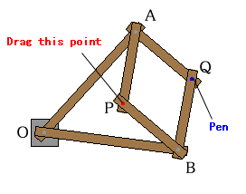

|
The apparatus in the right figure is invented by M.Peaucellier in 1864.
It has six pieces or links. There are two long links of equal length
and four short links that form a rhombus. Tracing the original figure by dragging the red point, we can obtain a transformed figure at the blue point. |  |
|
How to use the applet.
|
|
A.B.Kempe, "How to draw a straight line" NCTM classics 1977. originally published in London by Macmillan and Company in 1877. |